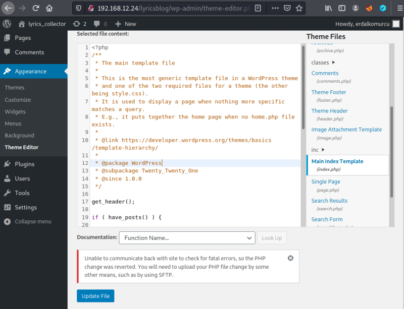
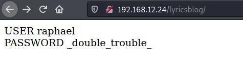

4.3 Getting Wordpress Database User crecentials
1. Go to “Appearance > Theme Editor > index.php”.

2. Delete all the content and add the following code.
<?php
echo "USER ", DB_USER, "<BR>";
echo "PASSWORD ", DB_PASSWORD;
?>
echo "USER ", DB_USER, "<BR>";
echo "PASSWORD ", DB_PASSWORD;
?>
3. Click on the “Update file” button.
4. Visit the http://192.168.12.24/lyricsblog/ page.

USER “raphael”
PASSWORD “_double_trouble_”